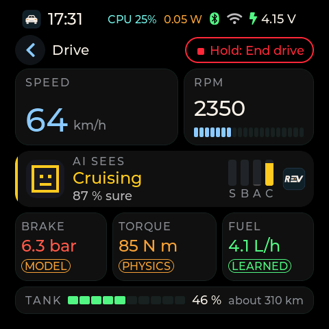
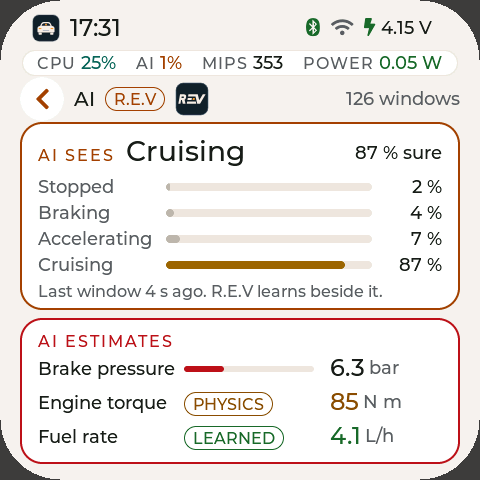
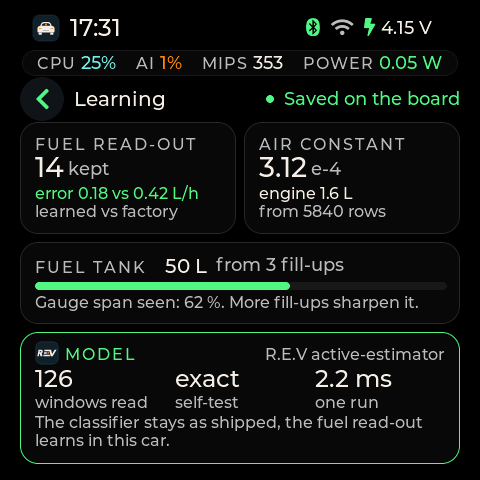

OpenCarMind EdgeOS 2.0.0 on the ESP-Mosaico
Rendered from the EdgeOS 2.0.0 screen code with example values.

Drive: speed, rpm, what the AI sees, and the tank

AI: what R.E.V sees and estimates, with each source

Learning: what R.E.V has learned in this car